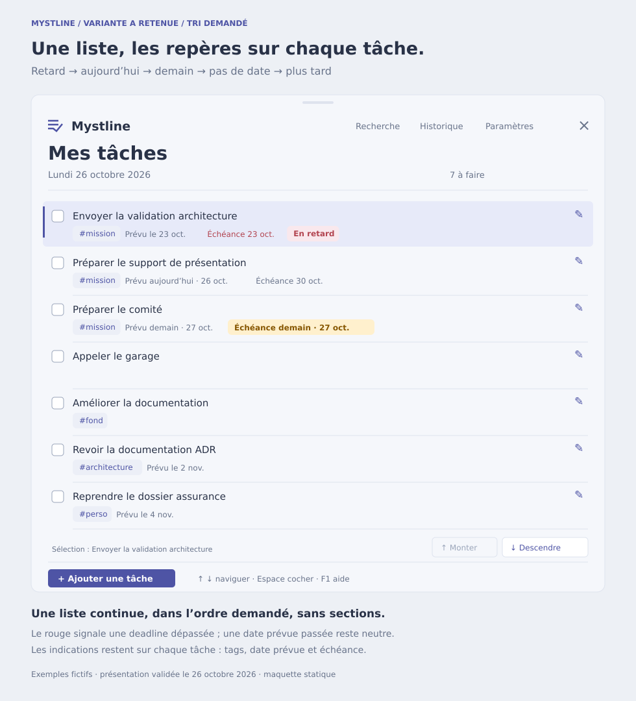

Ordre demandé : Retard → aujourd'hui → demain → pas de date → plus tard. Maquette actualisée avant développement ; les règles sont décrites dans la SFG mise à jour.

Les deux variantes initiales affichent les mêmes informations existantes : titre, case à cocher, tags, date prévue, deadline et indicateur de retard sur la tâche. L'ordre est illustratif. Les commandes dessinées ne sont pas actives.